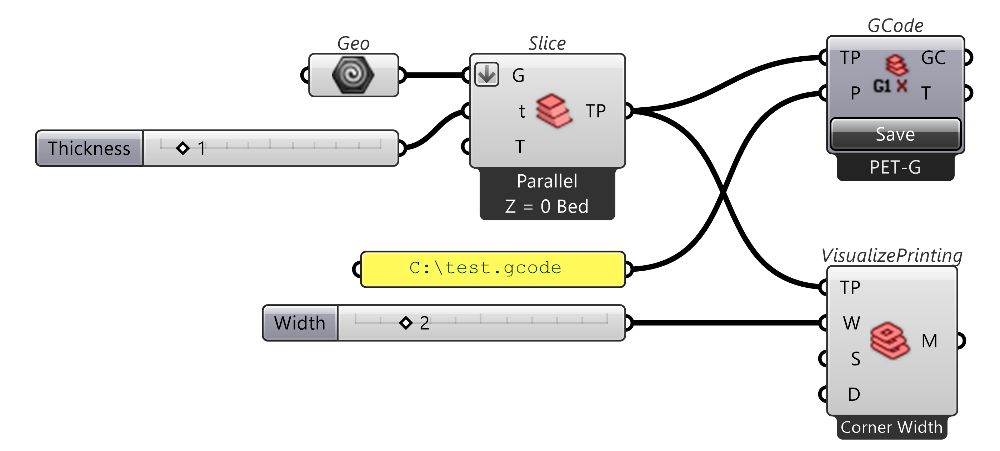
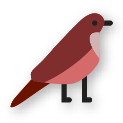
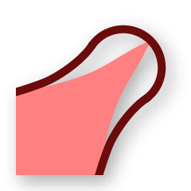

Ovenbird: Concrete and Multi-Material 3D Printing
Ovenbird is a free Grasshopper plug-in that generates, analyzes, and optimizes 3D printing toolpaths for concrete and other large-format materials with the extended functionality of gradient multi-material printing.

Key features

 Non parallel slicing
Non parallel slicing Agile visualization
Agile visualization Buildability optimization
Buildability optimization
Gradient multi-material printing